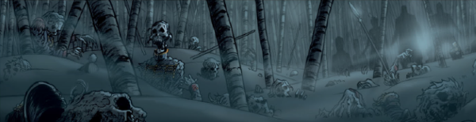

Vampires stalk the terrible battlefields of global conflict.
Art by Dave Taylor
| Story Title | Parts | Pages | w indicates a wraparound coverCovers | Year(s) | Issues | Writer | Artist | Colourist | Letterer |
|---|---|---|---|---|---|---|---|---|---|
| Fiends of the Eastern Front | 10 | 43.5 | 158: Carlos Ezquerra 1 | 1980 | Reprints: M201 (supplement) FCBD6‑QR (partial: ep.1) 152-161 | Gerry Finley-Day | Carlos Ezquerra | [b&w] | unknown: 1 Jack Potter: 2, 4‑10 Steve Potter: 3 various |
From Durham Red | The Scarlet ApocryphaHeresy 6: Red Menace | 1 | + 1 credit pages6 | 0 | 2002 | M4.17 | Dan Abnett | Carlos Ezquerra | <-- | Ellie de Ville |
| Stalingrad | 8 | 48 | M247: Colin MacNeil M251: Colin MacNeil 2 | 2006 | M245-252 | David Bishop | Colin MacNeil | <-- | 1‑3 Colin MacNeil 4‑8 Ellie De Ville various |
| Fodder | 1 | 6 | 0 | 2016 | FCBD6 | Hannah Berry | Dani | [b&w], [spot color] | Sam Gretton |
| 1812 | 6 | 30 | 2101: John Higgins 1 | 2018 | 2100-2105 | Ian Edginton | Dave Taylor | <-- | Annie Parkhouse |
No supertitle.Fiends of the Western Front | 5 | 40 | 2112: Tiernen Trevallion1 | 2018-2019 | 2111-2115 | Ian Edginton | Tiernen Trevallion | [greyscale] | Annie Parkhouse |
Prequel to the original series.Strange Meeting | 1 | 8 | 0 | 2019 | SFS24 | Guy Adams | Dave Kendall | <-- | Ellie de Ville |
| Constanta | 10 | 50 | 2201: Tiernen Trevallion 2209: Tiernen Trevallion 2 | 2020 | 2201-2205, 2207-2211 | Ian Edginton | Tiernen Trevallion | <-- | Annie Parkhouse |
| >> Posters / Teasers << | |||||||||
| Constanta | 1 | 1 | 0 | 2020 | 2200 | n/a | Tiernen Trevallion | <-- | n/a |
| year | episodes | pages |
| 1978 | 0 | 0 |
| 1979 | 0 | 0 |
| 1980 | 10 | 43.5 |
| 1981 | 0 | 0 |
| 1982 | 0 | 0 |
| 1983 | 0 | 0 |
| 1984 | 0 | 0 |
| 1985 | 0 | 0 |
| 1986 | 0 | 0 |
| 1987 | 0 | 0 |
| 1988 | 0 | 0 |
| 1989 | 0 | 0 |
| 1990 | 0 | 0 |
| 1991 | 0 | 0 |
| 1992 | 0 | 0 |
| 1993 | 0 | 0 |
| 1994 | 0 | 0 |
| 1995 | 0 | 0 |
| 1996 | 0 | 0 |
| 1997 | 0 | 0 |
| 1998 | 0 | 0 |
| 1999 | 0 | 0 |
| 2000 | 0 | 0 |
| 2001 | 0 | 0 |
| 2002 | 1 | 6 |
| 2003 | 0 | 0 |
| 2004 | 0 | 0 |
| 2005 | 0 | 0 |
| 2006 | 8 | 48 |
| 2007 | 0 | 0 |
| 2008 | 0 | 0 |
| 2009 | 0 | 0 |
| 2010 | 0 | 0 |
| 2011 | 0 | 0 |
| 2012 | 0 | 0 |
| 2013 | 0 | 0 |
| 2014 | 0 | 0 |
| 2015 | 0 | 0 |
| 2016 | 1 | 6 |
| 2017 | 0 | 0 |
| 2018 | 7 | 50 |
| 2019 | 5 | 28 |
| 2020 | 10 | 50 |
| 2021 | 0 | 0 |
Comic strip data (excludes other content):